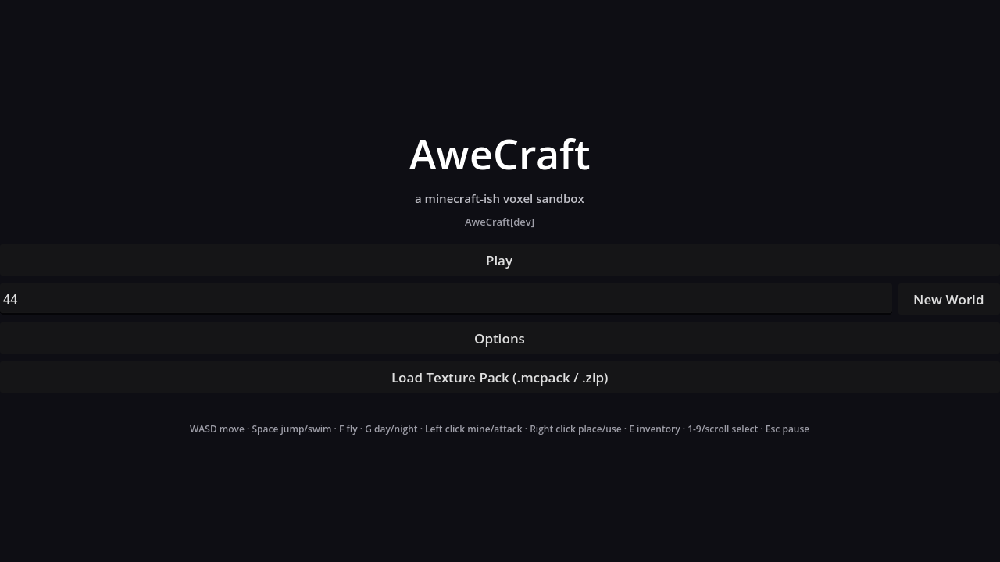
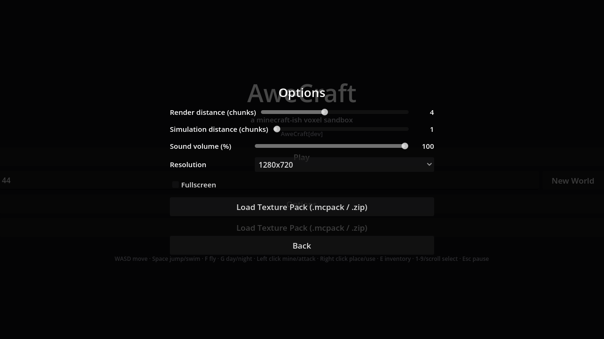
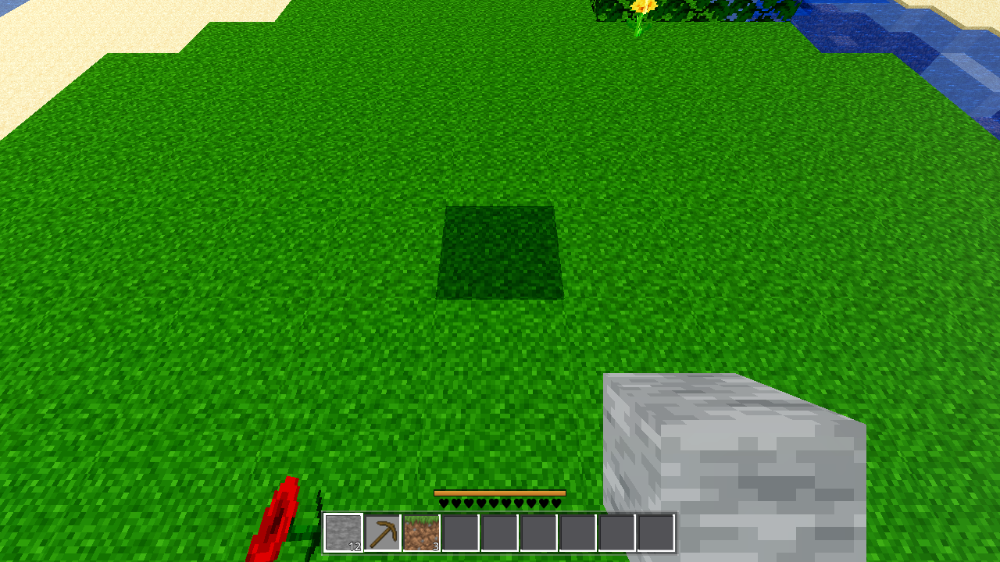

2026-08-21 · debug+fix on existing menu code · env-gated boot remains AWECRAFT_MENU=1 (flip to menu-first is Phase 2)
(1) The menu never added its UI to the scene tree. In godot/ui/menu.gd, _build_main()/_build_pause()/_build_options() construct each box (a full-rect Control + bg ColorRect + centered VBoxContainer) and store it in main_box/pause_box/options_box — but add_child(box) was never called on the menu CanvasLayer. The boxes existed only as dangling GDScript references: get_child_count() == 1 (just the FileDialog), sizes stuck at (0,0), is_inside_tree() == false. Nothing 2D was ever drawable. The old "children present + visible=true" probes read object properties, not tree membership — which is why the minimization went in circles, and why a "byte-identical replica" in a separate scene rendered fine (someone's replica must have added the child).
(2) The menu path had no active camera. main.gd only creates camera in the game path. With no Camera3D, the root viewport runs no 3D pass at all — no Environment background, no aero sky — so the frame collapses to the viewport's default clear color (0.3,0.3,0.3) = (77,77,77). There is no (77,77,77) constant in the menu source (its bg is MENU_BG (14,14,20)); 77,77,77 is the engine default. Both bugs together = the exact uniform gray observed. Aero grade/sky/wash was ruled out by A/B (AWECRAFT_AERO=0 → still uniform 77,77,77), confirming the re-verify-first note in the spec.
godot/ui/menu.gd (+3) _ready: add_child(main_box); add_child(pause_box); add_child(options_box)
godot/scenes/main.gd (+10) new _setup_menu_camera(): makes+activates a Camera3D at origin
(idempotent: no-op once the game camera exists — player.start() takes over at Game.start, player.gd:108)
called from the AWECRAFT_MENU_SHOT branch and from _boot_menu()
Both fixes are robust across renderers (real GPU and web included): putting UI in the tree is a correctness bug fix, and giving the menu viewport a camera is what every drawing path in this project already requires. No llvmpipe-specific hacks, no rendering-method conditionals, no probe scaffolding left in the tree (probe code was added during diagnosis and fully removed).
Binary search behind temp AWECRAFT_PROBE2D=1|2 flags in the MENU_SHOT branch:
| Run | Setup | Frame result | Conclusion |
|---|---|---|---|
| repro (pre-fix) | AWECRAFT_MENU_SHOT = current menu path | 1 distinct color (77,77,77); md5-identical to the old menu-main.png | Current failure mode reproduced exactly; 3D bg and 2D layer both absent |
| A/B aero | AWECRAFT_AERO=0 | still 1 distinct (77,77,77) | aero grade/sky/wash NOT the cause |
| probe 2D | plain red full-rect ColorRect on own CanvasLayer + tree walk | frame = 100% (230,51,51); walk: Menu layer's only child = FileDialog; box/bg/vb is_inside_tree()==false, sizes (0,0) | 2D canvas works; menu boxes were never in the tree |
| probe cam | bare Camera3D current=true, no UI | 1399 distinct colors (aero sky + sun) | 3D pass works iff a camera exists — menu path had none |
| Gate | Command | Result |
|---|---|---|
| G1 | godot --headless --path godot --quit (×2, incl. final state) | zero script errors |
| G2 | full logic battery, headless, all 22 modes in main.gd: player, interact, light, fluids, buckets, craft, guiclick, swing, look, combat, water, fpv, tint, daynight, atlas, fluidsettle, settings, survival, editperf, perf, genhash, trees | 22/22 green, 0 script errors, unchanged behavior (harness skip intact: AWECRAFT_SNAPSHOT/LOGIC still boot straight into game). Note: fpv tool_held_ok:false is PRE-EXISTING — A/B via git stash: byte-identical RESULT on the pristine tree. |
| G3 | render AWECRAFT_MENU_SHOT=… (current canonical menu path) + AWECRAFT_MENU_VIEW=options; interactive AWECRAFT_MENU=1 25 s boot also verified | menu-main-after.png: 863 distinct (was 1); top color (14,14,20)×707 749 = MENU_BG, white title text (255,255,255)×2 485. menu-options-after.png: 540 distinct; panel drawn ((17,17,18) content on (4,4,5) = MENU_BG under the 0.72 overlay), 0 green pixels (no world behind). Zero script errors; RESULT {"menu":true,"mode":"menu","build":"dev",…} |
| G4 | menu→game via kept hook: AWECRAFT_MENU_BOOT=1 AWECRAFT_SNAPSHOT=… AWECRAFT_NO_FOG=1 AWECRAFT_RADIUS=2 (boots menu, simulates Play press via existing menu_ui.play_clicked(), snapshots game world) | menu-to-game.png: 6 606 distinct colors — terrain, water, held tool + hotbar HUD, menu gone; RESULT {"m4":"ok","cam":"","w":1280,"h":720} |
uniform 77,77,77 · 1 distinct pixel · menu-main.png / menu-options.png (md5-identical to pre-fix repro)

menu-main-after.png · 863 distinct · title + version + Play/New World/Options + help line

menu-options-after.png · 540 distinct · render distance 4 / sim distance 1 / volume 100 / 1280x720 / fullscreen / pack import / Back

menu-to-game.png · 6 606 distinct · world rendered after Play (a harness byproduct menu-to-game_placed.png from the aim-place path also kept as extra evidence)
AWECRAFT_MENU=1 + AWECRAFT_SNAPSHOT) is now (by design, spec requirement: "AWECRAFT_SNAPSHOT starts straight into the game") routed to the game path. Current canonical hooks: AWECRAFT_MENU_SHOT=<abs path> (+AWECRAFT_MENU_VIEW=options) for menu shots; AWECRAFT_MENU=1 interactive; AWECRAFT_MENU_BOOT=1+AWECRAFT_SNAPSHOT for menu→game shots (documented for Phase 2). Absolute snapshot paths required — Debug.snap() fails on relative paths (pre-existing quirk, not changed).AWECRAFT_DEBUG_TREE=1 (menu.gd) now prints truthful layout (bg 1280×720, VBox 1280×720) — left in place per project env-hook pattern.